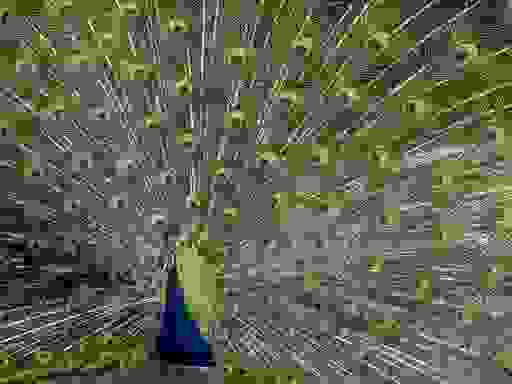
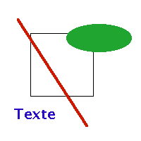
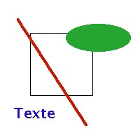
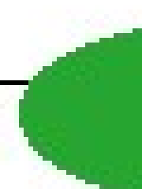
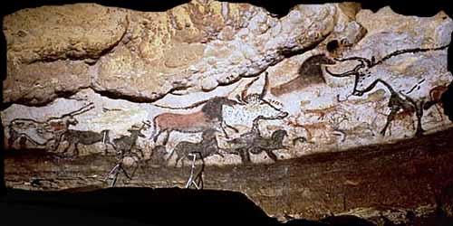

Contenu du cours
I. Généralités
1. Introduction
Ce qui suit n'est pas un cours d'infographie mais simplement un panorama de ce qui est nécessaire à un cours HTML. Nous n'aborderons pas tous les formats d'images ni les moyens de les créer et les traiter. Nous manipulerons au maximum
un éditeur d'images comme Paint Shop Pro ou PhotoShoppour mettre en oeuvre les différents formats évoqués.
2. Compromis entre nombre d'images et temps de chargement
Les images sont incontournables pour créer un impact visuel mais insupportables pour le temps de chargement. Il n'y a rien de plus fastidieux que de lire un texte sans illustration. L'illustration et l'image bien utilisées, permettent de structurer le document présenté. Elles le rendent attrayant, accessible, lisible. L'emploi d'images est incontournable pour construire une page Web qui retiendra son lecteur.
En revanche, les images qui doivent être téléchargées ont une certaine taille, qui augmente d'autant le temps de chargement d'une page.
3. Images et accessibilité
Il ne faut néanmoins pas perdre de vue qu'en aucun cas, une image ne doit être absolument nécessaire pour comprendre une page, ou bien sa navigation.
A l'extrême, on pourrait ainsi imaginer écrire tout un paragraphe avec une police particulière, le sauvegarder avec un éditeur graphique sous forme d'une image, et l'ajouter à une page Web. Une personne malvoyante ou bien ayant désactivé l'affichage des images, serait ainsi gravement pénalisée dans sa lecture de la page, puisqu'une partie de l'information de celle-ci lui serait inaccessible.
De même, il faut se garder de limiter le dispositif de navigation à l'intérieur d'un site à des icônes ; celles-ci permettent certes de parfois améliorer l'ergonomie du site, mais si elles ne sont pas doublées par un système de navigation alternatif, rendent le site inacessible à toute une catégorie d'internautes.
4. Les formats du Web
a. Introduction
Pour limiter le temps de chargement, on s'est efforcé très tôt d'utiliser des formats d'images conduisant à des fichiers de taille réduite. Les méthodes reposent sur la compression de l'information à transmettre. On distingue 2 types de compression :
-
La compression sans perte d'information. Elle repose sur le repérage dans le fichier à traiter des successions d'octets identiques ou de profils de bits fréquents. Ce sont les compressions des formats
ZIPouRAR. Elles permettent la compression de fichiers de programmes où le moindre bit perdu peut induire une catastrophe. -
La compression où on accepte la perte d'information : réduction du nombre de couleurs, perte des détails. On réduit ainsi l'encombrement tout en maintenant une simplification acceptable de l'image. Ce sont les compressions des formats
JPEGouPNG.
b. Les formats d'image
Trois formats principaux sont acceptés par la plupart des navigateurs.
-
Format
GIF, GIF pour Graphic Interchange Format. L'entreprise CompuServe Information Service et Unisys en produit deux versions : 87a et 89a (année de création). La dernière est la plus avantageuse et la plus répandue. Elle ne tolère pas plus de 256 couleurs (2^8).C'est un format de compression sans perte, qui est très utilisée pour le stockage et le transfert d'images. Son mode de compression est particulièrement adapté à la création d'images simples, des schémas avec des traits ou de larges zones de couleurs.
Il existe une méthode d'encodage particulière, appelée interlacing (GIF entrelacé), où l'image est transférée en quatre passes au lieu d'une et qui permet donc au lecteur d'avoir un aperçu progressif de l'ensemble de l'image globale (si l'utilisateur dispose d'un navigateur ancien, il ne verra pas de différence !). Il faut noter qu'il n'y a pas vraiment augmentation de la vitesse de transfert, mais lisibilité de l'image globale plus rapide. Cette différence n'apparaît d'ailleurs que la première fois que le lecteur charge l'image si le navigateur a son propre cache (sinon raffraîchir l'affichage de la page).
Le format
gif89apermet de rendre une couleur transparente ; il est alors possible de la superposer à un arrière-plan. -
Format
JPEG, JPEG pour Joint Photographic Experts Group. Comme son nom l'indique,JPEGa été développé pour les images photographiques. Ce format convient aux images obtenues à partir de scanner ou d'un appareil photo numérique. Mais il est déconseillé pour les schémas et les bannières. Créé en 1990 pour s'affranchir des limitations du formatGIF, il compense le maintien des couleurs (jusqu'à seize millions) par une perte de la qualité de l'image et un temps de décompression assez important. Cette perte de qualité affecte surtout les schémas.Il existe également un
JPEGprogressif (même effet que legifentrelacé), malheureusement peu de navigateurs actuellement l'affichent. -
Format
PNG, pour Portable Network Graphics. Il s'agit d'un nouveau format libre de tous droits, qui devrait supplanterGIF. (Code source http://www.libpng.org/pub/png/pngcode.html).Le format PNG présente les propriétés suivantes :
-
Transparence ; alors que cette transparence est limitée à une seule couleur pour le
GIF(une seule combinaison RGB), le formatPNGutilise un quatrième paramètre, dénommé alpha. Il permet d'appliquer un effet de transparence progressive à une gamme de couleurs. Plus d'informations sont disponibles sur le site de WebReview (http://www.webreview.com/1997/05_09/designers/05_09_97_1.shtml). -
Progressivité (entrelacement ou interlacing)
-
Image 24 bits d'information par pixel pour créer les couleurs (chaque pixel contient 256 nuances de rouge, de vert et de bleu. Une image 24 bits peut ainsi comporter jusqu'à 16,7 millions de couleurs). Cette capacité peut monter à 48 bits par pixel.
-
La compression
PNGest habituellement 25% meilleure que la compressionGIF.
Tous ces avantages sont développés par le consortium du W3C : http://www.w3.org/TR/PNG-Rationale.html.
-
c. Exemples
La réduction du nombre de couleurs se fait bien sentir quand on passe de 16 millions de couleurs à 256 :
Image à 16 millions de couleurs. |
Image à 256 couleurs. |
Table 1. Effet de la diminution du nombre de couleurs.
On peut appliquer un effet de transparence sur une image au format GIF. L'image suivante possède ainsi un fond transparent ; pour vous en convaincre, copiez-la et testez-la en l'incorporant à
des pages de fonds différents :
Un GIF animé est constitué de plusieurs images séparées :
Voici maintenant plusieurs exemples d'images JPEG avec différents taux de compression...
Taille du fichier 228ko. |
Taille du fichier 72ko. |
Taille du fichier 30ko. |
 Taille du fichier 6ko. |
Table 2. Compression des images JPEG.
La compression JPEG est efficace pour conserver le rendu des couleurs. Cependant, quand il s'agit de schémas, composés de larges zones de couleurs
"plates", la compression GIF est plus adaptée :
|  Schéma au format |
 Schéma au format |
Zoom sur le schéma au format |
 Zoom sur le schéma au format |
Table 3. Efficacité des algorithmes de compression pour un schéma simple. La taille du fichier JPEG est plus grande, et les couleurs dans ce dernier sont "délavées" ; il n'y a pas de délimitation claire entre les zones.
JPEG et PNG ont le même rendu des couleurs, mais la compression JPEG est plus efficace :
Image JPEG, taille du fichier 14ko. |
Format PNG, taille 74ko. |
Table 4. Comparaison des compressions JPEG et PNG.
En revanche, PNG permet un effet de transparence (ici sans l'effet de transparence graduelle)...
5. Les ''GIFs animés''
Il s'agit d'une façon très simple de créer une animation : un artifice permet de loger plusieurs images dans un seul et même
fichier, ces images étant rapidement affichées les unes à la suite des autres. À la création du GIF animé, on peut paramétrer la répétition en boucle du GIF.
Remarque : Les GIF animés sont volumineux et alourdissent le téléchargement de la page.
L'insertion dans la page Web se fait à l'identique de n'importe quelle autre image GIF. Certains (très vieux) navigateurs ne supportent pas ce format, et n'affichent que la première image de la boucle.
II. La balise <img>
1. Usage
La balise <img> est le moyen le plus simple d'insérer une image dans une page Web mais on pourra aussi lui préférer la balise <object> qui est d'un usage beaucoup plus général et qui permet d'insérer d'autres objets multimédia.
2. Syntaxe minimale
La balise fermante est facultative : de fait elle est toujours omise. La syntaxe minimale est :
<img src="monimage.gif" alt="courte description">
L'attribut src comme SouRCe attend pour valeur une URL relative ou absolue. L'attribut alt donne une courte description texte de l'image, qui peut s'afficher fugacement au survol de la souris.
3. Attributs
|
Attribut |
Effet |
Valeur(s) |
|---|---|---|
|
|
où trouver l'image à afficher. Cet attribut est requis. |
une URL (relative ou absolue). |
|
|
étiquette affichée à la place de l'image si par exemple l'utilisateur a désactivé l'affichage des images. Cet attribut est requis. |
une chaîne de caractères. |
|
|
Renvoie vers un fichier contenant une "longue" description de l'image. Permet d'améliorer l'accessibilité en offrant aux malvoyants la possibilité de consulter une description détaillée d'une image riche en information. |
une URL |
|
|
Largeur et hauteur réservées par le navigateur pour l'image dans la page Web. Permet de réserver cette place même si l'image n'est pas encore chargée. Par défaut ces valeurs sont celles de l'image (voir paragraphe suivant). |
nombre de pixels ou en pourcentage de la fenêtre du navigateur. |
|
|
Indique qu'il s'agit d'une image réactive "server-side" (voir image réactive). |
un booléen. S'utilise |
|
|
Indique qu'il s'agit d'une image réactive "cient-side" (voir image réactive). |
un lien vers une |
|
|
Détermine la position de l'image par rapport au texte qui l'entoure. L'image peut suivre le flot du texte ou être enveloppée
par ce texte. Par défaut la valeur est à |
|
|
|
épaisseur de la bordure entourant l'image. Par défaut zéro. On ne peut pas en choisir la couleur. Cet attribut est obsolète en |
un nombre |
|
|
Définit une marge autour de l'image. |
un nombre de pixels |
Table 5. Attributs de la balise <img>.
Les attributs width et height, même s'ils ne sont pas obligatoires, sont cependant recommandés. En effet, lorsqu'une image est en chargement dans la fenêtre
du navigateur, ils permettent à ce dernier de réserver la place qu'elle va occuper. S'ils ne sont pas spécifiés, le client
attend d'avoir téléchargé l'image entière pour réserver la place ; cela peut résulter en un changement de l'apparence d'une
page en cours de téléchargement, ce qui n'est pas forcément esthétique. Ces attributs permettent également de modifier la
taille de l'image affichée, même s'il ne faut pas oublier qu'un navigateur n'est fondamentalement pas un éditeur graphique,
qui permet de redimensionner de manière plus efficace la taille d'une image. Par exemple, voici notre perroquet redimensionné :
La taille normale de cette image est de 256x192, mais les attributs width et height valent width="500" et height="100".
III. Image réactive
1. Introduction
Ce concept recouvre plusieurs aspects différents, notamment celui d'une simple image-lien, mais également celui, plus complexe, de carte réactive. Il s'agit d'une fonctionnalité intéressante, mais qu'il faut manipuler avec attention ; comme d'habitude, on n'utilise pas un outil pour la simple raison qu'il existe. Il faut qu'il apporte quelque chose de plus à la page.
2. Image-lien
La forme la plus simple d'image réactive est obtenue en plaçant une image à l'intérieur du conteneur <a></a>. Par exemple, cette icône remonte au début de la section consacrée à la balise <img>.
<a href="#img"><img src="images/fleches_haut.gif" alt="Retour" height="21" width="21"></a>
3. Image réactive ''client-side''
a. Introduction
Aux premiers temps du Web, l'analyse de la position du pointeur de souris sur l'image était effectuée par le serveur et non localement par le navigateur de l'utilisateur. Puis cette fonctionnalité a été développée d'abord par Netscape pour être effectuée localement par la machine du surfeur. On oppose ces deux situations en parlant de "server-side" et "client-side".
L'organisation "server-side" demande un échange supplémentaire avec le serveur : c'est donc une solution lourde aujourd'hui abandonnée par les auteurs de pages Web, car elle surcharge à la fois le réseau lui-même et le serveur. Nous ne développerons que l'organisation "client-side".
b. Découper l'image en zones sensibles
Le découpage de l'image est assuré par le conteneur <map>. Ce conteneur contient la description de plusieurs zones sensibles : une zone est décrite par un conteneur <area>. <map> possède un unique attribut, name, qui est obligatoire.
Ce lien est fait à l'aide du nom du conteneur <map>. L'attribut name du conteneur <map> permet de lui donner un nom. L'attribut usemap du conteneur <img> prend pour valeur ce même nom précédé du # (ou de manière générale l'URL du map).
Le code suivant...
<img src="images/homeparoi.jpg" width="500" height="250" alt="Paroi de Lascaux" usemap="#lascaux"></img>
<map name="lascaux">
<area shape="rect" coords="23, 106, 107, 179" href="#mapping" Zones sensibles=""></area>
<area shape="circle" coords="230,131,46" href="#img" balise img=""></area>
<area shape="poly" coords="375, 42, 381, 140, 433, 150, 465, 117, 468, 63, 425, 39, 374, 40" href="#imglien" Image-lien=""></area>
</map>
... donne le résultat ci-dessous :
Exemple d'image réactive.
4. Remarque
La description des zones "à la main" est fastidieuse : il est recommandé de les programmer à l'aide d'un éditeur généraliste
comme Dreamweaver ou FrontPage, ou bien des outils gratuits spécialisés comme les logiciels MapThis ou GeoHTML, ou l'utilitaire gratuit en ligne ImageMapper.